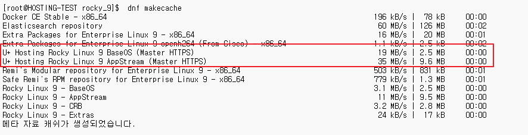

시스템 인프라 운영
로컬 저장소 설정 방법
Rocky Linux 9 ISO를 이용해 마스터 서버에서 HTTP/HTTPS로 배포하고, 슬레이브 서버가 이를 사용하도록 설정하는 방법입니다.
1. 서문
이 문서는 Rocky Linux 9 ISO를 이용해 로컬 저장소를 구축하고, 마스터 서버는 ISO를 마운트해 HTTP/HTTPS로 배포하며, 슬레이브 서버는 이를 사용하도록 설정하는 방법을 안내합니다.
2. 마스터 서버 설정
2-1. 마운트 포인트 생성 및 ISO 마운트
/home/rocky_9 경로에 ISO가 마운트됩니다.
mkdir -p /home/rocky_9
mount -o loop /mnt/IOS/Rocky_9.iso /home/rocky_92-2. Apache HTTP 서버 설치 및 ISO 경로 공유
dnf install -y httpd
systemctl enable --now httpd
ln -s /home/rocky_9 /var/www/html/rocky_9/etc/httpd/conf.d/repo.conf 내용:
# 80 포트로 들어오는 모든 요청을 https:// 로 리다이렉션
<VirtualHost *:80>
ServerName repo.taeun.store
Redirect permanent / https://repo.taeun.store/
</VirtualHost>
# HTTPS 가상호스트
<VirtualHost *:443>
ServerName repo.taeun.store
DocumentRoot /var/www/html/rocky_9
# SSL 설정
SSLEngine on
SSLCertificateFile /etc/letsencrypt/live/taeun.store-0001/fullchain.pem
SSLCertificateKeyFile /etc/letsencrypt/live/taeun.store-0001/privkey.pem
Include /etc/letsencrypt/options-ssl-apache.conf
# 특정 확장자 재압축 방지
SetEnvIfNoCase Request_URI "\.(gz|xz|bz2|zst|rpm|drpm)$" no-gzip dont-vary
# sendfile/mmap 전송 비활성화로 데이터 깨짐 방지
EnableSendfile Off
EnableMMAP Off
# 지정 확장자 파일의 인코딩/변형 차단
<FilesMatch "\.(gz|xz|bz2|zst|rpm|drpm)$">
Header unset Content-Encoding
Header set Cache-Control "no-transform"
SetEnv no-gzip 1
</FilesMatch>
<Directory /var/www/html/rocky_9>
Options Indexes FollowSymLinks
AllowOverride None
Require all granted
</Directory>
</VirtualHost>이제 외부에서 HTTP/HTTPS를 통해 dnf, yum으로 접근 가능합니다.
2-3. 부팅 시 자동 마운트 설정 (선택)
echo '/mnt/IOS/Rocky_9.iso /home/rocky_9 iso9660 loop,ro 0 0' >> /etc/fstab
mount -a # 마운트 테스트3. 슬레이브 서버 설정
3-1. 로컬 저장소(repo) 설정 파일 생성
HTTP로 제공된 저장소를 사용하므로 ISO 마운트는 불필요합니다.
vim /etc/yum.repos.d/local-iso.repo[BaseOS]
name=Hosting Rocky Linux 9 BaseOS (Master HTTPS)
baseurl=https://repo.taeun.store/BaseOS
enabled=1
gpgcheck=0
[AppStream]
name=Hosting Rocky Linux 9 AppStream (Master HTTPS)
baseurl=https://repo.taeun.store/AppStream
enabled=1
gpgcheck=0dnf는 추가하지 않아도 자동으로 반영됩니다. 패키지 관리자 둘 다 설정됩니다.
3-2. 저장소 캐시 갱신 및 테스트
dnf clean all
dnf makecache
# DNS 에러 발생 시 hosts 파일에 repo.taeun.store → 마스터서버 IP 매핑 필요
dnf install -y vim
슬레이브 서버에서 dnf makecache 실행 시 로컬 저장소 인식 확인
4. 참고 사항
- ISO 버전이 고정되므로 최신 보안 업데이트는 반영되지 않습니다.
- 최신 패키지를 원할 경우, 새로운 Rocky Linux ISO를 다운로드하여 교체해야 합니다.
- 내부망 환경에서 대규모 서버 관리 시, Master-HTTP + Slave 구조가 효율적입니다.